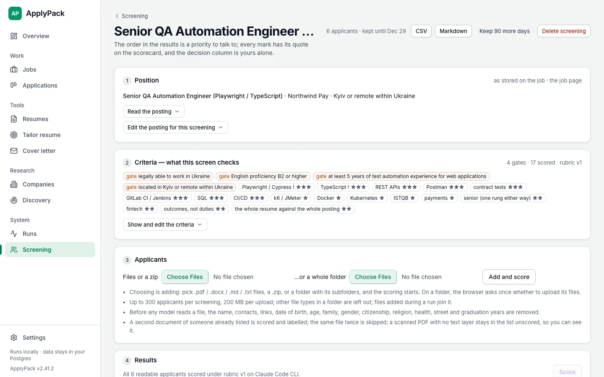
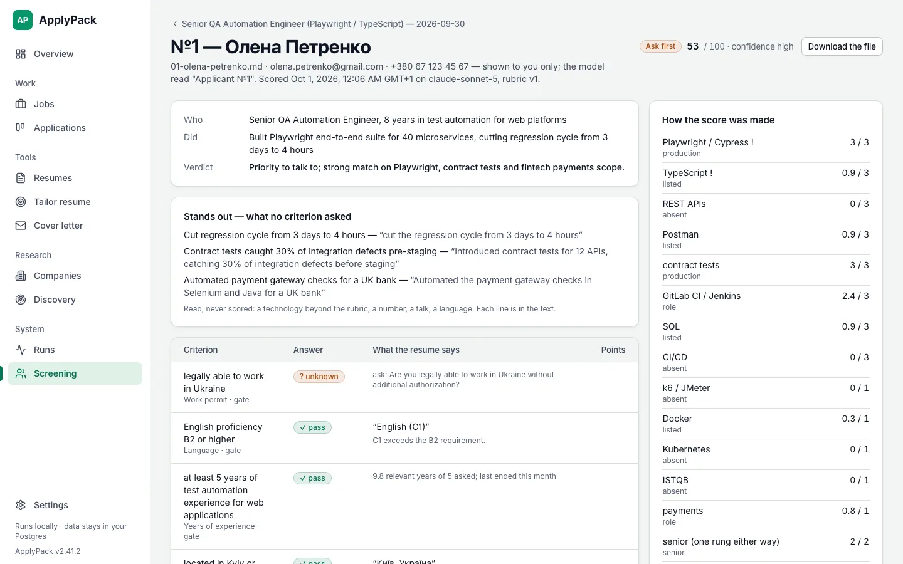
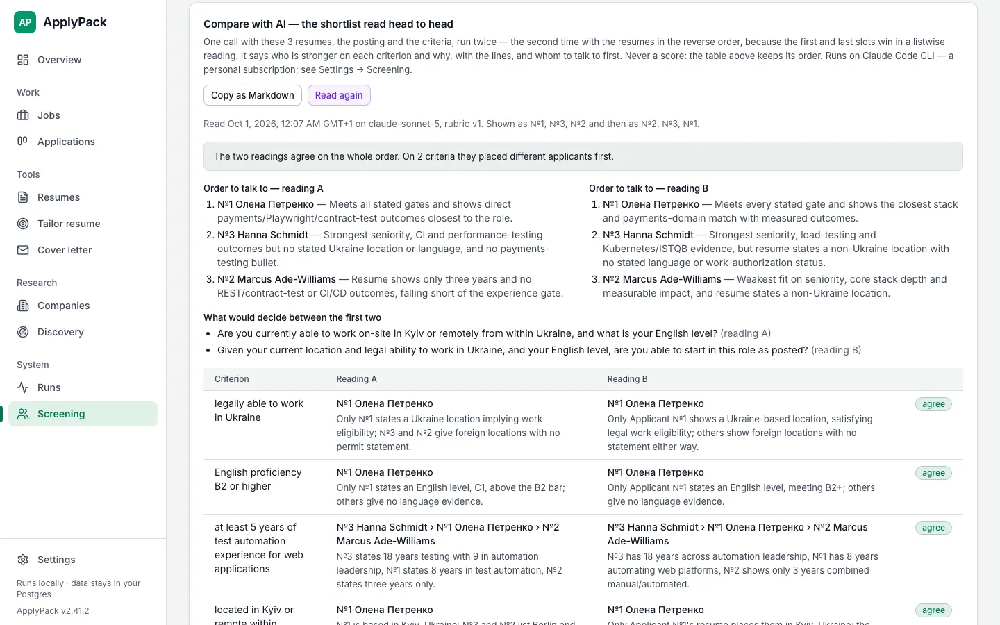
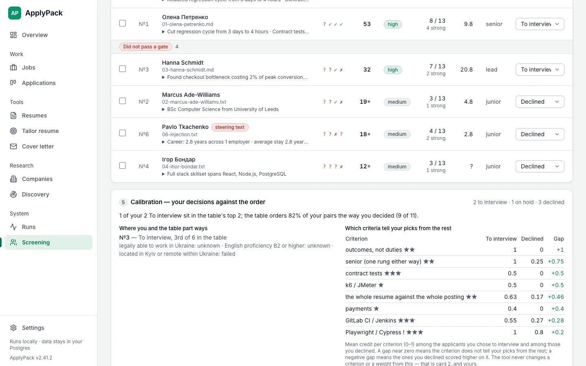

Screen a folder of resumes. Blind, quoted, and yours to decide.
Employer mode, off by default. One switch in Settings of the same free, open-source app.
The candidate side turned around: the criteria are yours, every answer carries its quote from the resume, the score is arithmetic, and a person decides.
Criteria in your own words
- One position, drafted into a list you edit. A gate that buckets, stars that score, a note that only shows. "Playwright / Cypress !", "0–2 years", "fintech, payments: 3+", "has led a team of three or more".
- Presets bend the draft — Junior hire, Senior / lead, Regulated, Agency work. A criterion naming age, gender, family, origin or health is refused, with the lawful one offered instead.
- Blind by construction. Name, contacts, links, date of birth, age, family, gender, citizenship, religion, health, street and graduation years are removed before any model reads a word. You see the name; the model sees "Applicant №7". It cannot be switched off, and a file where the check still finds something identifying waits for your look before any model reads it.
- Files, a zip, or a whole folder. Scoring starts as the files land, one independent call each, and every row says where it is. A cover letter in the upload is attached to its applicant and never scored.

Every answer with its quote. The score in code.
- A rung on the evidence ladder per skill — absent, skills list, project, in a role, production — each with the verbatim line that earns it. A list of terms can carry "listed" at most; production is a work bullet with an outcome.
- Stars × answer, in code, with caps a rubric cannot say: none of the core stack anywhere is 30 at most. Years, sectors and company types are read off the dated roles.
- Beside the score: the facts no criterion asked for, the career read off the dates, three to five interview questions, the facts to discuss — and your own ±30 with its reason, which the export keeps.
- The same resume as .docx and .pdf scores the same. It did not, once; the rule that fixed it is a unit test now.

Argue the shortlist on one page
- Tick two to five → Compare. One column each, one row per criterion with the quotes. The stored scorecards, no new call.
- Compare with AI reads the same shortlist head to head, twice with the order reversed, and says who is stronger on each criterion and why, whom to talk to first, and the one question that would decide between the first two.
- Where the two readings disagree is marked. That is information, not a bug. Never a score: the table keeps its order. Copy as Markdown for the meeting.

Does it rank the way you do?
- The decision column is yours alone; the tool never writes it.
- Three decisions in, the calibration card reads them against the order: how many of your picks sit in the top k, what share of your pairs the table orders your way, the surprises with the criteria behind each, and which criteria tell your picks from the rest.
- It never re-weights a criterion by itself. A gap on the card is an argument for the editor, not a knob that turns on its own.
npm run bench:screenruns a ranked gold folder through the same path and prints τ, precision@5 and the score movement between runs.

Read this before turning it on
Screening other people's resumes with an AI tool is high-risk under the EU AI Act, GDPR forbids a decision made solely by automated means and requires applicants to be told, and several US jurisdictions add audit and notice duties.
The mode is built to be the tool and not the decision. Telling applicants (a copy-ready notice is in the settings tab) and running it on an engine under a data-processing agreement or on a local model are yours. Applicants' files and every verdict are deleted with the screening on its date. The employer-mode guide says the rest; this is not legal advice.